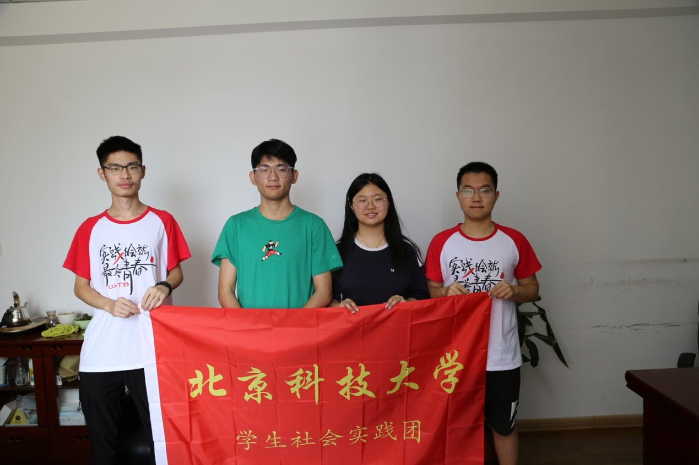

今天分别前往威海市农业局和文登区农业局，与特色农业产品站站长进行访谈。 我们与两位站长进行了充分的交流，了解了威海市和文登区水果产业供销环节和该产业存在的问题。着重调查了樱桃生产、运输、消费过程的特点和保鲜需求。 在威海市农业局： 首先是王站长科普水果腐败原因：植物激素和病菌侵染。目前水果保鲜需求集中在草莓、无花果、樱桃上。 随后介绍目前威海市保鲜常用手段。针对不同的环节采用的手段不同。对于采后储藏环节，主要使用低温和气体调节结合的方法，缺点是储藏条件脆弱、难以维持；对于运输环节，尤其是长时间、高温运输往往使用冷链运输的方法，但成本高昂。
接下来，我们详细询问了樱桃产、运、销过程。 樱桃是一种时令性很强的水果。它的成熟时机在很大程度上取决于如气温、日照等地理条件。可以利用山东省内的温度变化差异，使不同品种的樱桃在不同时间成熟，形成在市场上较长时间的供货期。 威海市樱桃种植的特点是个体户较多，因此樱桃销售方式呈现多元化，如采后即销、采后上市、采后即吃。导致樱桃少有积压、滞销现象。
基于这些特点，结合我们提供的保鲜垫产品，王站长认为应当把使用场景聚焦于环节更替和积货售卖上。其可行性应当由消费群体、供销环节、成本决定。其中，供销环节越多越长，则保鲜需求越大。 对于保鲜垫，安全性是排在首位的，是不可逾越的红线。其次应在保证保鲜效果的前提下降低价格。 他还建议，最好针对水果种类撰写具体、详细的使用手册。

在文登区农业局： 我们在文登区了解了本片区樱桃产业情况。

一般来说，由于威海临近海边，所以城市升温较慢，且越靠近东侧，樱桃成熟越慢。目前需要扩大产业规模，关键是整合散户，实现规模化经营。同时注意提升樱桃本身品质和口感，下功夫降低次品率。